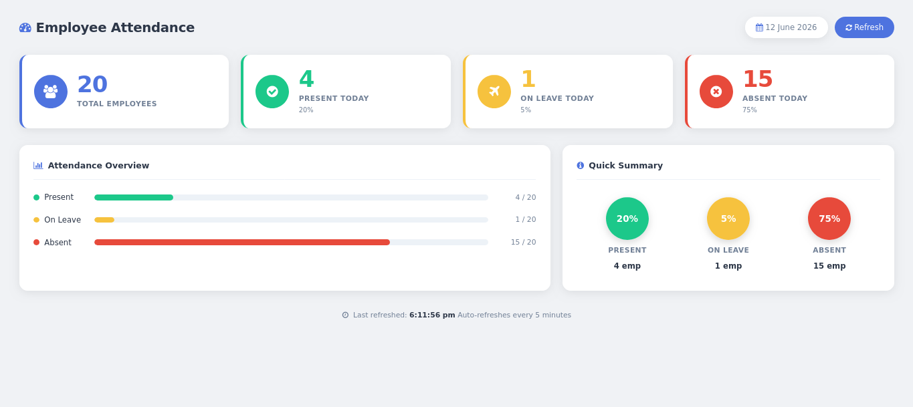
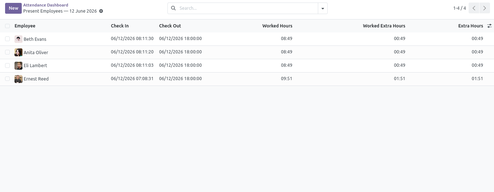
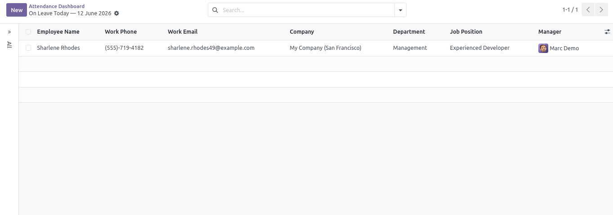
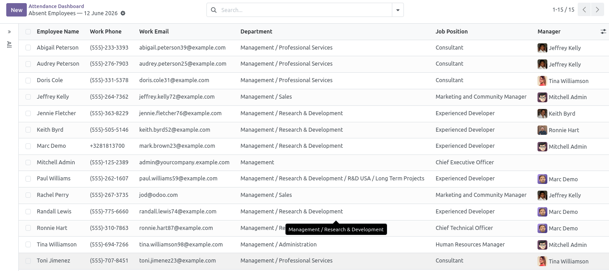

|
☷
Live Attendance Counts
Real-time Total, Present, On Leave & Absent counts for your entire company.
|
▶
One-Click Employee Drilldown
Click any stat card to open a filtered list of the relevant employees instantly.
|
↻
Auto-Refresh Every 5 Min
Dashboard data updates automatically — no page reload or manual action required.
|
●
Timezone-Aware Logic
Today's boundaries use the user's local timezone — accurate for every office worldwide.
|
The Odoo Wings HR Attendance Dashboard gives your HR team a single, always-current view of the workforce. It queries live attendance and approved-leave records and splits every active employee in your company into four clear groups — Total, Present, On Leave, and Absent — with counts, percentages, and one-click drilldowns into the underlying Odoo records. No configuration. No setup wizard. Install and it works immediately.
|
▮ 4 Live Stat Cards
Total Employees · Present Today · On Leave Today · Absent Today.
Each card shows a count and a percentage of the total workforce.
|
▮ Attendance Overview Panel
Horizontal progress bars for Present, On Leave, and Absent —
showing both employee count and fraction of the total at a glance.
|
|
▮ Quick Summary Circles
Colour-coded percentage circles for Present, On Leave, and Absent —
also clickable for instant drilldown into the relevant employee list.
|
▮ OWL Component Architecture
Built natively with Odoo 19's OWL (Odoo Web Library) framework.
Uses the standard JSON-RPC endpoint — zero external dependencies.
|
Screenshots are ordered for the strongest product story: the full dashboard first, then individual drilldowns.




Every time data loads, the controller classifies all active employees in the current company into exactly one bucket.
|
✓
|
Present
An employee is Present if they have at least one
hr.attendance check-in record whose
check_in timestamp falls within today's start and end (using the user's local timezone boundaries converted to UTC).
Priority: Present beats On Leave — an employee who checked in despite having approved leave is counted as Present. |
|
✈
|
On Leave
An employee is On Leave if they have a validated (state =
validate) hr.leave record
whose date_from ≤ today ≤ date_to, and they did not check in today.
Pending or refused leaves are excluded.
|
|
✗
|
Absent
Everyone remaining — active employees in the company who have neither an attendance check-in nor a validated leave record covering today.
These are the employees you may want to follow up with.
|
No configuration is required. The module is ready immediately after installation.
|
1
|
Install the module from the Odoo Apps Store. Dependencies — hr, hr_attendance,
and hr_holidays — are standard Odoo modules and will be installed automatically if not already present.
|
|
2
|
Navigate to Attendances in the top menu and click Dashboard. The dashboard opens immediately with live data for today. |
|
3
|
Review the four stat cards: Total Employees, Present Today, On Leave Today, and Absent Today. Each shows an employee count and the percentage of the total workforce. |
|
4
|
Click any card (or any percentage circle in the Quick Summary panel) to open the corresponding filtered list view — attendances for Present, employees for On Leave and Absent. |
|
5
|
The dashboard auto-refreshes every 5 minutes in the background. Use the Refresh button in the header to pull the latest data immediately at any time. |
|
Odoo 19 Compatible
Version string:
19.0.1.0.0. Category: Human Resources / Attendances. |
Dependencies
hr, hr_attendance, hr_holidays — all standard Odoo modules, installed automatically. |
License
OPL-1. Price at Lowest Cost
|
|
Frontend Architecture
OWL Component registered as a client action. SCSS for styling. No external JS libraries.
|
Backend Endpoint
POST /hr_dashboard_odoo_wings/get_attendance_data — JSON-RPC, auth='user'. |
Security
All authenticated Odoo users can view. Data is scoped to the user's current company.
|